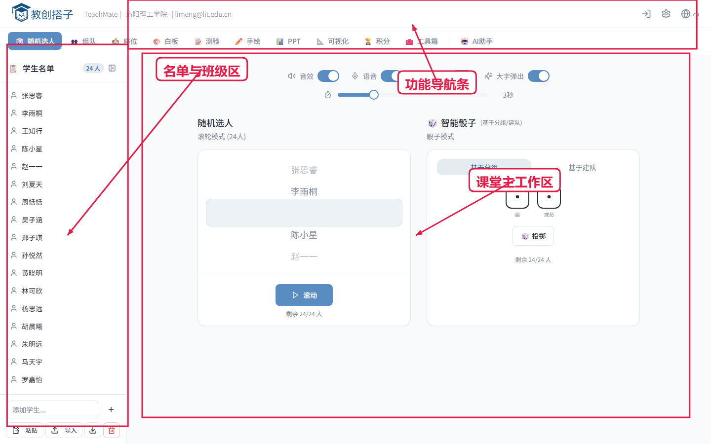
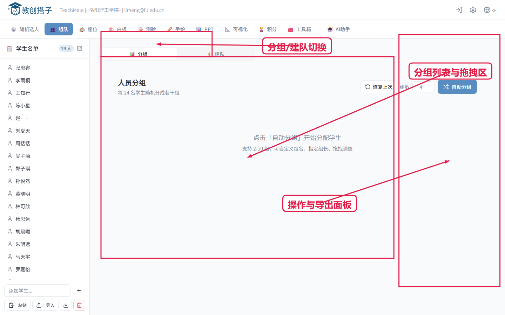
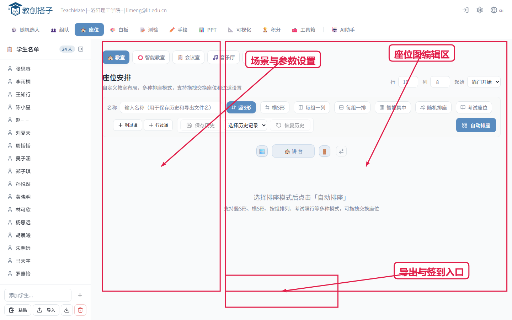
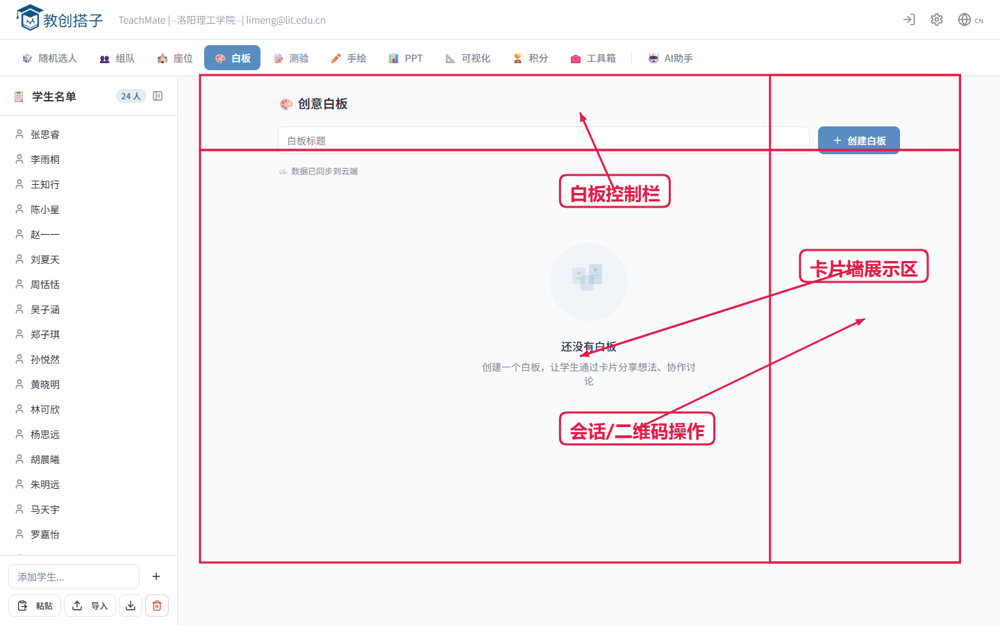
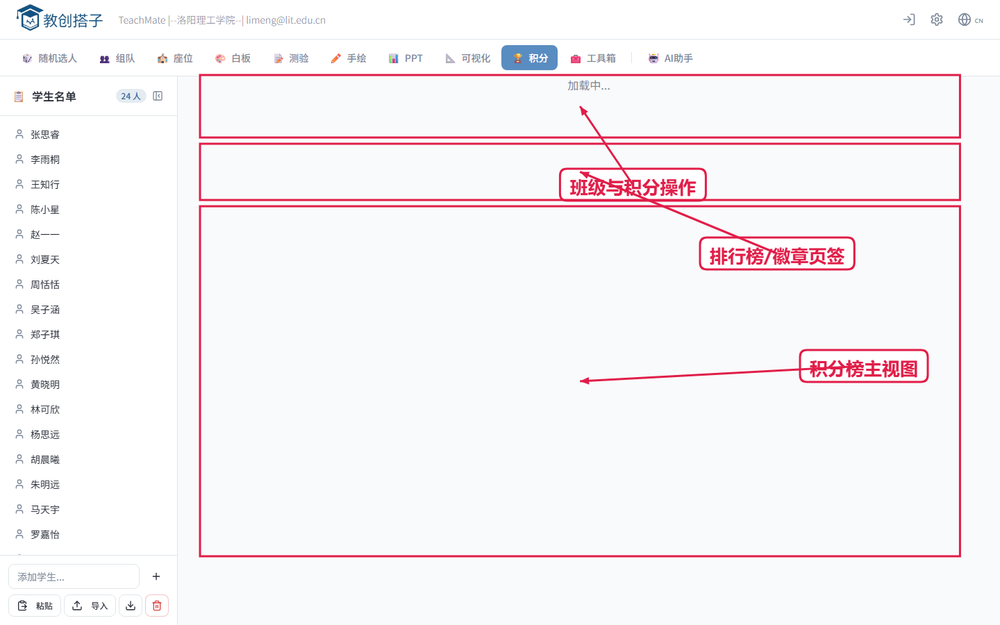
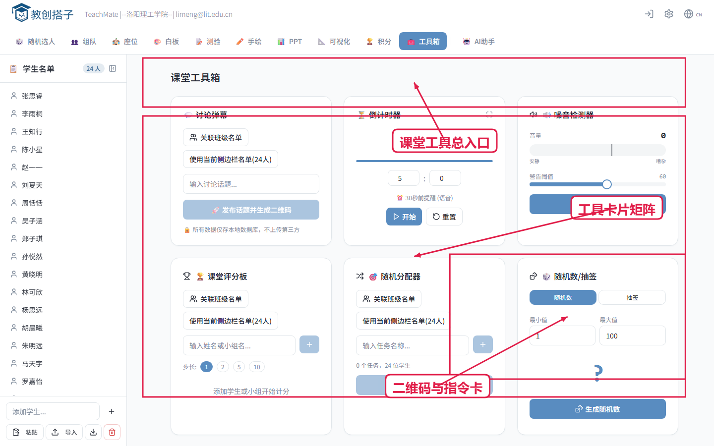

第1讲 课前准备：名单导入与班级校验（8分钟）
用户故事：作为任课老师，我希望开课前 8 分钟完成班级数据准备，避免上课后再处理名单。
- 打开首页并导入学员名单。
- 检查重名、空行、缺失姓名。
- 确认本次课堂目标与分组策略。

首页与名单区
第2讲 课前组织：分组与建队（8分钟）
用户故事：作为课堂组织者，我希望在开课前形成可执行的小组结构。
- 进入分组/建队模块，设置组数或每队人数。
- 点击自动分组后，根据任务进行拖拽微调。
- 确认每队职责或队长。

分组建队操作区
第3讲 课前就绪：按教室实际排座（8分钟）
用户故事：作为班级管理者，我希望座位图与教室真实布局一致，减少现场混乱。
- 选择场景并配置行列、走道、禁用位。
- 自动排座后按实际情况局部微调。
- 必要时导出座位图用于投屏或打印。

多场景排座
第4讲 课中互动：白板收缴作业（8分钟）
用户故事：作为授课老师，我希望学生通过手机快速提交作业，我能实时汇总并讲评。
- 创建白板话题并明确提交要求。
- 出示二维码让学生提交作业卡片。
- 按内容筛选、点评、置顶优秀答案。

白板互动与卡片汇总
第5讲 课后巩固：词库记忆与积分复盘（8分钟）
用户故事：作为授课老师，我希望课后把知识点固化到词库并结合积分做持续激励。
- 将本课核心点录入词库并生成闪卡。
- 布置学生课后用闪卡复习。
- 查看班级积分变化并记录激励结果。

成就与班级积分
第6讲 收尾留档：输出课堂资产（5分钟）
用户故事：作为教研负责人，我希望每节课都可追溯、可复用。
- 导出分组、座位、白板提交、测验、积分数据。
- 按“班级-日期-课次”命名归档。
- 复盘下节课需要沿用的模板。

工具箱与导出辅助